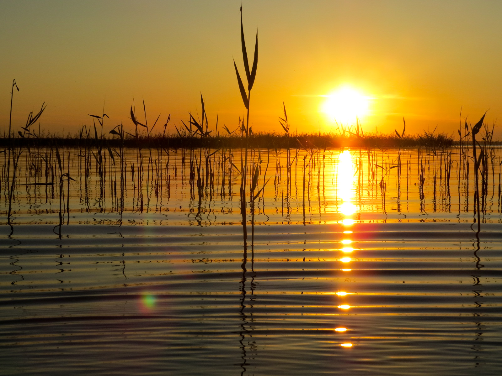

Озёра Омской области


Озеро Ик
Расстояние от центра Омска - 207 км
Время в пути - 3 часа
Лучшее время для отдыха - круглый год
Особенности - бесплатное посещение, хороший улов, легкодоступное расположение
Озеро Ик располагается в Крутинском районе Омской области. Является частью системы Больших Крутинских озёр, в которую кроме него входят еще водоемы Салтаим и Тенис. Длина озера составляет почти 12 км, а ширина его - более 8 км, общая длина береговой линии протянулась на 22 км. Площадь водного зеркала превышает 71 кв. км, а общая площадь водосбора - 1190 км кв. Озеро лежит в глубокой котловине, склоны которой достаточно выпуклые, а местами даже круглые. В основном берег пологий, только в некоторых местах обрывистые уступы высотой 4-5 м затрудняют подход к воде. А вблизи селения Китерма кручи подымаются до 6 м. Озеро Ик в Омской области имеет ровное, но илистое дно. Глубина его увеличивается плавно, достигая своего максимума к середине водоема. После отметки 4,75 метра в самом центре озера, глубина снова плавно уменьшается. Таким образом, центральная часть водоема является как бы вершиной перевернутого конуса.
Вода в озере Ик местами прозрачная, но из-за илистой почвы дно можно увидеть на глубине не более одного метра. Цветет водоем приблизительно в конце июля, но цветение незначительное. Камышей по периметру озера не так много, из большая часть сосредоточена на юго-восточном берегу.
Грунт дна озера везде разный. Песчано-илистый грунт - распространен преимущественно в прибрежной полосе на расстоянии до 200-250 метров. Имеет легкий запах сероводорода. Темно-бурый ил с разнообразными остатками растительности - встречается в основном в западной части озера на глубине до 2 метров. Серо-зеленый ил - устилает всю центральную часть водоема на глубине от 3,5 до 4,5 метра. Глинистый ил с песком - преобладает с восточной стороны озера.
Озеро Ик в Омской области лежит в зоне резко континентального климата. В этом регионе погодные условия достаточно суровы: холодная зима со среднегодовой температурой -19 градусов, короткое лето с температурным режимом от +18 до +22 градусов, быстротечные весна и осень. Зимой и в межсезонье воды озера скованы льдом, который вскрывается только в середине мая.
Растительный и животный мир в окрестностях озера Ик довольно разнообразен. Здесь произрастает множество характерных для данной полустепей деревьев и кустарников: березы, осины, осока, подорожник. В самой воде растет тростник и камыши, ряска. На поверхности озера часто можно встретить жуков-плавунцов, личинки стрекоз, а в окружающих местах обитает ондатра, кулики, гуси и утки. За пределами Омской области озеро Ик известно своей самой северной в мире колонией кудрявых пеликанов, а также здесь гнездится большой баклан.
Озеро Ик является одним из самых популярных мест для рыбалки не только среди жителей Омской области, но и для жителей Тюменской и Курганской областей. Водоем, вместе с прилегающими озерами Тенис и Салтаим, легко доступен для посещения, так как въезд в его окрестности бесплатный, а сам он расположен неподалеку от большой трассы Е30.
Озеро Ик считается самым богатым на улов из большинства северных озер Омской области. Здесь даже вылавливают рыбу в промышленных масштабах, но и непрофессиональные рыбаки получат от местной рыбалки большое удовольствие. В водах озера можно поймать судака, леща, плотву, язя, щуку, карпа, толстолобика, белого амура, но любимая рыба местных рыбаков — окунь и карась.
Рыбалка здесь популярна как в летнее, так и в зимнее время. Озеро покрывается льдом только к середине осени — концу октября или началу ноября. Сходить ледяной покров начинает к концу весны — в середине мая. Небольшие ограничения на вылов рыбы на территории озера Ик действуют приблизительно с 20 апреля до 20 мая. Также большое количество водоплавающих птиц привлекает на озеро не только рыболовов-любителей, но и охотников.